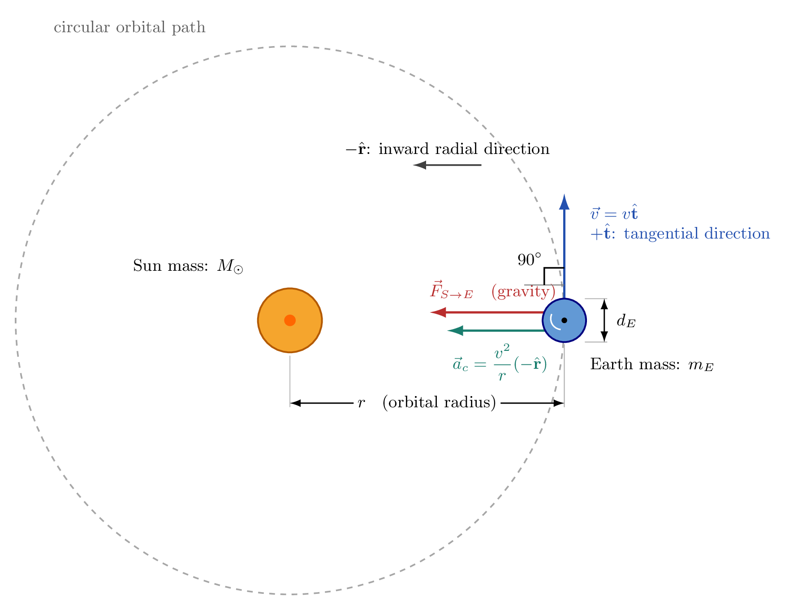

Explain how physics connects observations of nature to mathematical models and testable predictions.
Identify relevant physical quantities, scales, assumptions, and approximations for a stated question.
Compare the physical regimes described by classical mechanics, quantum mechanics, general relativity, and quantum field theory.
Decide when an extended object may be represented as a point particle and recognize when that approximation fails.
Physics and Analytical Physics
What is physics? Physics is the systematic study of matter, energy, motion, forces, space, time, and interactions. It seeks patterns that apply to many systems rather than isolated descriptions of individual events. Observation and experiment tell us what nature does, while physical theories organize those observations into principles that can explain past results and predict new ones.
What is analytical physics? Analytical physics is the practice of representing a physical question with a mathematical model and using logical or mathematical analysis to obtain general conclusions. It is not primarily equation memorization. The central skill is deciding which description is useful. A physicist identifies the system, asks a precise question, selects relevant quantities, states assumptions, applies physical principles, and checks whether the result is consistent with units, limiting cases, and observations.
An analytical result is especially valuable when it shows how a prediction depends on several quantities. Such a result can explain trends, reveal controlling parameters, and apply to a whole family of situations.
Physical Systems, Models, Variables, and Assumptions
Physical systems and mathematical models. A physical system is the part of nature chosen for study, such as a falling baseball, a moving car, or Earth and the Sun. The surroundings are everything outside the chosen system that may influence it. A mathematical model is a simplified representation of the system using quantities, relationships, geometry, and physical laws.
Why physicists use models and approximations. Real systems contain enormous detail. A model suppresses details that have negligible influence on the question. A road map omits the chemistry of pavement because that information is unnecessary for navigation. In the same way, a model of a ball's flight may omit its stitching if the question concerns only its approximate travel time.
Choosing relevant variables and physical quantities. Relevant quantities are those that can significantly affect the requested prediction. Position and time matter when studying motion. Mass and net force matter when studying acceleration. Size and shape may matter for rotation or air resistance but not for every translational question. Units help distinguish quantities and expose inconsistent equations.
The importance of assumptions and approximations. An assumption states what the model accepts as true, such as negligible air resistance or constant gravitational field. An approximation replaces a complicated feature with a simpler one, such as treating Earth as spherical. Every assumption has a domain of validity. A useful analysis states assumptions before calculation and checks them afterward.
\[\text{physical system}\longrightarrow\text{selected quantities and relationships}\]
\[[Q]=\text{physical dimensions of the quantity }Q\]
Physical scales range from quarks and other elementary particles through nuclei, atoms, people, planets, solar systems, galaxies, and the observable universe. No ordinary linear ruler can display this range clearly. Physicists therefore use powers of ten and logarithmic scales.
Moving one equal interval on a base-ten logarithmic scale changes length by a factor of ten rather than by a fixed number of metres. Scale affects what details can be observed and which theory or model is appropriate. A human is enormous compared with an atom but tiny compared with Earth. Earth is enormous compared with a person but small compared with its orbital distance from the Sun.
The relevant scale is not always the size of the system. It may instead be the travel distance, wavelength, orbital radius, measurement resolution, or distance over which a field changes appreciably.
Physics spans roughly forty-five orders of magnitude in length, from subnuclear systems to the observable universe.Equal horizontal intervals represent equal changes in the exponent, so each step of one unit changes length by a factor of ten.
Different Regimes of Physics
Different regimes of physics. A physical regime is a range of scales, speeds, gravitational strengths, or energies in which a particular description is accurate and efficient. The boundaries are not rigid walls. Neighboring theories often overlap where both produce nearly the same prediction.
Classical mechanics describes the motion of macroscopic objects when quantum effects are negligible and speeds are much lower than the speed of light. It is highly successful for projectiles, vehicles, machines, and many satellite calculations.
Quantum mechanics describes systems for which wave behavior, discrete states, or measurement probabilities cannot be neglected. It is essential for atoms, molecules, and many microscopic devices. Macroscopic size alone does not define the quantum regime; the important issue is whether quantum scales influence the question.
General relativity describes gravity as a property of spacetime and becomes important for strong gravitational fields, compact astronomical objects, cosmology, or measurements requiring very high precision. Newtonian gravity remains an excellent approximation for many weak-field, low-speed problems.
Quantum field theory combines quantum principles with special relativity and describes elementary particles as excitations of fields. It is needed when particle creation, particle destruction, or relativistic quantum effects matter. No advanced field-theory calculations are needed here; its role is to identify the regime of high-energy particle physics.
\[\epsilon_v=\frac{v}{c}\]
\[\epsilon_g=\frac{GM}{rc^2}\]
\[\epsilon_q=\frac{\lambda}{d}\]
\[\epsilon_v\ll1,\ \epsilon_g\ll1,\ \epsilon_q\ll1\quad\text{often support a classical weak-field model}\]
Major theories apply in different but overlapping physical regimes.
How Theories Relate Through Physical Limits
How different theories describe different physical regimes. Theories may describe the same system at different levels of detail. A satellite orbit can be modeled with classical gravity for routine predictions or with general relativity when tiny timing corrections matter. An atom requires quantum mechanics for its internal structure, while the motion of a warm gas sample may often be treated classically at a larger scale.
Connections between theories and approximations. Successful theories agree with established theories in appropriate limits. Quantum predictions approach classical behavior when quantum wavelengths are tiny compared with the resolved scale and many microscopic effects average together. General relativity approaches Newtonian gravity when fields are weak and speeds are low. Quantum field theory can reduce to nonrelativistic quantum mechanics when particle creation and relativistic effects are negligible.
These connections are consistency requirements. A new theory must reproduce the successful predictions of an older theory wherever the older theory has already been tested. Analytical physicists actively examine limiting cases because they reveal whether a model behaves sensibly.
\[\frac{\lambda}{d}\longrightarrow0\quad\Longrightarrow\quad\text{quantum wave effects become difficult to resolve}\]
The Point-Particle Model
What is a point particle? A point particle is a model in which an object's translational state is represented by one position, usually the position of its center of mass. Relevant properties such as total mass or electric charge may be assigned to that position.
Point particles as idealized models. Calling something a point particle does not claim that the real object literally has zero size. The model says that size, shape, orientation, and internal structure do not significantly affect the answer to the chosen question.
When can an extended object be treated as a point particle? The approximation is often reasonable when the object's characteristic size is much smaller than the distance over which it moves, the distance to other objects, or the scale over which external conditions vary. The useful comparison is a dimensionless size ratio.
When does the point-particle approximation break down? It fails when rotation, rolling, deformation, collisions, surface contact, orientation, drag depending on shape, tides, or internal structure affects the requested result. It also fails when the observation scale is comparable to or smaller than the object's size.
\[d=\text{characteristic object size}\]
\[L=\text{relevant observation or variation scale}\]
\[\epsilon_{\mathrm{size}}=\frac{d}{L}\]
\[\epsilon_{\mathrm{size}}\ll1\quad\Longrightarrow\quad\text{size may be negligible}\]
\[\epsilon_{\mathrm{size}}\gtrsim1\quad\Longrightarrow\quad\text{extended structure is important}\]
An extended object may be represented by one position when its size and internal details do not affect the question.
Baseball, Car, Satellite, Earth, and Planet Models
Examples show that the same object may require different models for different questions.
Baseball. A baseball can be a point particle when predicting the approximate path of its center over a long flight. Its finite size, surface seams, and spin become relevant when analyzing aerodynamic forces, impact, or rolling.
Car. A car can be a point particle when estimating travel time along a route much longer than the car. It cannot be a point particle when determining whether it fits into a parking space, whether it tips during a turn, how its wheels roll, or how it deforms in a collision.
Satellite. A satellite can often be a point particle when finding its orbit around Earth. Its shape and orientation matter for atmospheric drag, solar radiation pressure, antenna pointing, or attitude control.
Earth. Earth can be represented as a point mass when studying the approximate motion of its center around the Sun. Earth cannot be reduced to one point when studying its daily rotation, tidal deformation, weather, seismic waves, or internal layers.
Planet orbiting the Sun. A planet is often modeled as a point particle moving in the Sun's gravitational field because the planet's diameter is much smaller than its orbital radius. The approximation becomes insufficient for planetary rotation, tides, rings, atmosphere, or close encounters.
Choosing the appropriate model for a physical question. First ask what must be predicted. Then compare the object's size, the observation scale, and the scale over which forces or fields vary. Keep only the features capable of changing the answer by an important amount.
\[\epsilon_{\mathrm{size}}=\frac{d}{L}\]
\[\text{model choice}=\text{function of system, question, scales, and required accuracy}\]
A car may be a point on a long route but must remain extended in a parking problem.

For Earth's orbital motion, its diameter is tiny compared with the orbital radius, so its center can often be modeled as a point particle.Earth's finite size and structure are essential for rotation, tides, and internal processes.
The Analytical Physics Modeling Process
The analytical physics modeling process begins with a real system but not with an equation. First specify the question. Next identify the relevant scales and quantities. State assumptions and determine what effects may be neglected. Construct a mathematical model using definitions, geometry, and appropriate physical principles. Analyze the model to derive a prediction. Finally compare the prediction with observation, experiment, or a more complete model.
Real system. Define what is included and what belongs to the surroundings.
Question. State the requested quantity and required accuracy.
Relevant scales. Compare size, distance, time, speed, energy, and measurement resolution as appropriate.
Assumptions. State simplifications clearly and estimate whether neglected effects are small.
Mathematical model. Represent the system with quantities, diagrams, relationships, and applicable laws.
Analysis. Solve symbolically when practical, check units, and inspect limiting cases.
Prediction. Express what the model says should occur and under what conditions.
Comparison with reality. Test the prediction. Agreement supports the model within the tested regime. Disagreement may reveal measurement uncertainty, an invalid assumption, a calculation error, or missing physics. The process is iterative: comparison can lead to a refined question or model.
Analytical physics turns a real system into a testable prediction and uses comparison with reality to refine the model.The core cycle is real system, model, mathematical analysis, prediction, and comparison with reality.
Worked Examples
Example 1: Is a Baseball a Point Particle During a Pitch?
Problem: A baseball has diameter 0.073 m and travels 18.4 m from pitcher to batter. Use the ratio of object size to travel distance to assess whether a point-particle model is reasonable for estimating the motion of its center.
Given
Baseball diameter: \(d=0.073\,\mathrm{m}\)
Pitch travel distance: \(L=18.4\,\mathrm{m}\)
Find
The dimensionless size ratio \(\epsilon_{\mathrm{size}}=d/L\)
Whether a point-particle model is reasonable for tracking the baseball's center
Solution
Step 1. Identify the characteristic object size and the relevant travel scale.
\[d=0.073\,\mathrm{m}\]
\[L=18.4\,\mathrm{m}\]
Step 2. Use the dimensionless size ratio as the modeling criterion.
\[\epsilon_{\mathrm{size}}=\frac{d}{L}\]
Step 3. Substitute the measured scales and evaluate the ratio.
Step 4. Compare the ratio with one and state which features remain outside the model.
\[3.97\times10^{-3}\ll1\]
Example 2: The Same Car in a Road Trip and a Parking Problem
Problem: A car is 4.5 m long. Compare a 120 km road trip with a parking clearance of 0.30 m. Determine whether representing the car by one point is appropriate for each question.
Example 3: Modeling Earth as a Point Mass in Its Orbit
Problem: Earth has diameter 1.274 times ten to the seventh m and orbits at an average radius of 1.496 times ten to the eleventh m. First test the point-particle approximation. Then use a circular-orbit model to estimate Earth's orbital speed. Take the gravitational constant as 6.674 times ten to the negative eleventh in SI units and the Sun's mass as 1.989 times ten to the thirtieth kg.
Step 3. Assume a circular orbit, a stationary Sun, weak gravity, and negligible influence from other bodies. Equate gravitational force to the required centripetal force.
\[F_g=\frac{GM_Sm_E}{r^2}\]
\[F_c=\frac{m_Ev^2}{r}\]
\[\frac{GM_Sm_E}{r^2}=\frac{m_Ev^2}{r}\]
Step 4. Cancel Earth's mass and solve symbolically for orbital speed.
\[\frac{GM_S}{r}=v^2\]
\[v=\sqrt{\frac{GM_S}{r}}\]
Step 5. Substitute the physical constants in SI units.
1. What distinguishes physics from a list of observations about nature?
Physics seeks general principles and models that explain many observations and make testable predictions.
2. Why does analytical physics begin with a question rather than an equation?
The question determines the system, relevant quantities, required accuracy, and appropriate model.
3. How is a real physical system different from its mathematical model?
The real system contains all physical detail, while the model is a deliberately simplified representation.
4. Why can a simpler model sometimes be more useful than a more detailed model?
It can isolate the controlling effects, make analysis possible, and produce a result that applies to many systems.
5. If a question concerns travel time, which kinds of quantities are likely to be relevant?
Travel distance and motion information such as speed are likely relevant, while microscopic internal details may not be.
6. Why should assumptions be stated before completing a calculation?
They define the model's domain and allow the result to be checked for validity.
7. Why are powers of ten useful when comparing quarks, people, planets, and galaxies?
Their sizes span so many orders of magnitude that an ordinary linear scale would hide most of them.
8. What determines the physical regime of a problem?
Relevant scales, speeds, gravitational strength, energy, required precision, and the effects being investigated determine the regime.
9. Why is classical mechanics effective for a moving car?
The car is macroscopic, moves far below the speed of light, and ordinarily shows negligible quantum effects.
10. Why can classical mechanics not explain the internal structure of an atom?
Atomic structure depends on quantum wave behavior and discrete states.
11. When might general relativity be needed even if an object is not close to a black hole?
It may be needed when timing or position measurements are precise enough for small relativistic gravitational corrections to matter.
12. What feature distinguishes quantum field theory from ordinary nonrelativistic quantum mechanics?
Quantum field theory includes relativistic quantum effects and allows particle creation and destruction.
13. Why might the same satellite be analyzed with different theories?
Routine orbital motion may need only classical mechanics, while extremely precise timing may require relativity.
14. What should happen to a relativistic prediction in the low-speed limit?
It should approach the corresponding classical prediction.
15. What position does a point-particle model usually track for an extended object?
It usually tracks the object's center of mass.
16. Why is the point-particle model called an idealization?
It suppresses actual size, shape, orientation, and internal structure for a selected purpose.
17. What scale comparison supports treating an extended object as a point particle?
Its size should be much smaller than the relevant distance or field-variation scale.
18. Name two effects that can cause the point-particle approximation to fail.
Examples include rotation, deformation, rolling, surface contact, tides, orientation-dependent drag, and internal structure.
19. Why are several examples needed to understand point-particle modeling?
They show that validity depends on the question rather than on a permanent label assigned to an object.
20. For which baseball question is its stitching more likely to matter: approximate flight time or detailed aerodynamic curve?
The stitching is more likely to matter for the detailed aerodynamic curve.
21. Why can a car be a point on a route map but not in a parking diagram?
Its dimensions are negligible compared with the route but crucial compared with the parking clearance.
22. Why might a satellite's orientation matter even when its orbital position is well described by a point?
Orientation affects antenna pointing, drag, solar pressure, and attitude control.
23. Why can Earth be pointlike for orbital motion but extended for tides?
Orbital distance is much larger than Earth's diameter, while tides result from gravitational variation across that diameter.
24. What feature of a planet's orbit commonly supports a point-particle approximation?
The planet's diameter is usually much smaller than its distance from the Sun.
25. What should be asked before choosing between a point particle, a rigid object, and a deformable object?
Ask which prediction is required and whether size, rotation, shape, or deformation can significantly affect it.
26. Why is comparison with reality part of the modeling process rather than an optional final step?
A physical model gains credibility only through successful comparison with observations or experiments.
27. If a prediction disagrees with observation, what should a physicist examine first?
The physicist should examine measurements, calculations, assumptions, chosen scales, and omitted effects before deciding that a physical principle has failed.
Summary
Physics develops general, testable descriptions of nature. Analytical physics turns a real system and a precise question into a mathematical model by selecting relevant quantities, comparing scales, and stating assumptions. Different theories serve different regimes: classical mechanics for many macroscopic low-speed systems, quantum mechanics for quantum-scale behavior, general relativity for strong gravity or high precision, and quantum field theory for relativistic quantum particles. These theories connect through limiting cases. A point particle is an idealized representation of an extended object, not a literal zero-size object. It is useful when size and internal structure do not affect the requested prediction. The complete modeling process is real system, question, relevant scales, assumptions, mathematical model, analysis, prediction, and comparison with reality.